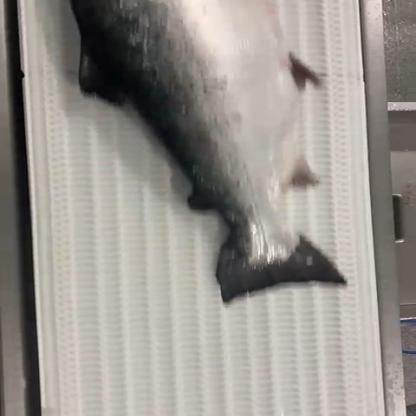
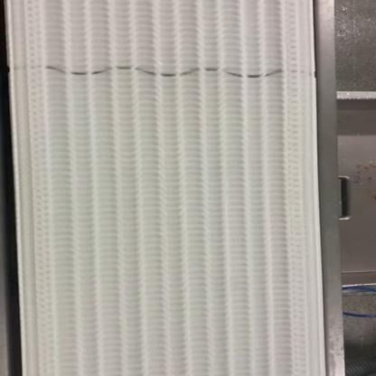
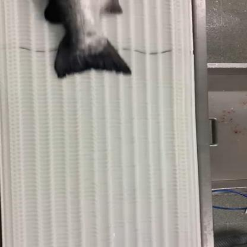
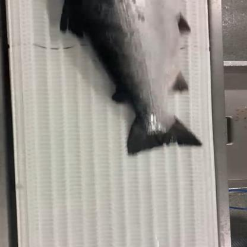
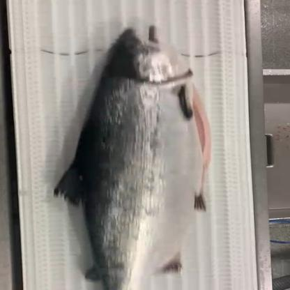
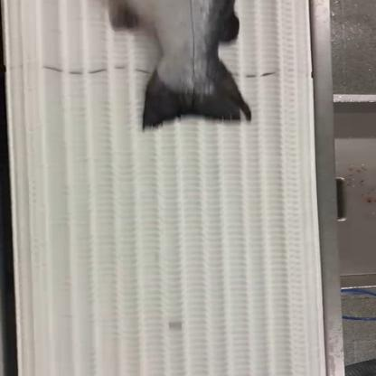
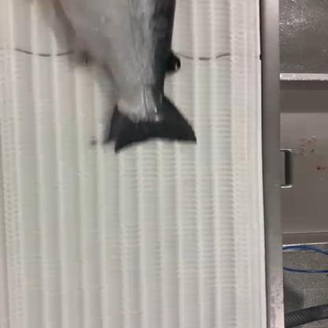
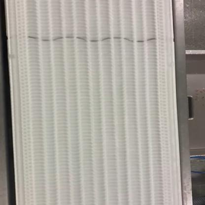

SalmoSonar Visión
datasets · videos · predicciones · atención
peces_obb-salmon_vf-test
Precisión0,0 %0 aciertos, 4 falsos
Recall0,0 %6 no detectados
F10,0 %IoU ≥ 0.5
IoU medio–de los aciertos
Error de puntos–de la diagonal de la caja
Tiempo499 mspor imagen
Modelo best.pt · confianza mínima 0.25 · imagen 1024 px · dataset completo · split test
Dónde acierta y dónde se equivoca
1 de 8 imágenes sin ningún error · 2 sin etiquetas (todo lo detectado cuenta como falso positivo). En cada imagen: ✓ acierto (IoU ≥ 0.5), FP detección sin etiqueta, FN etiqueta sin detección. Clic en una imagen para ver cajas, probabilidades y el mapa de atención.







